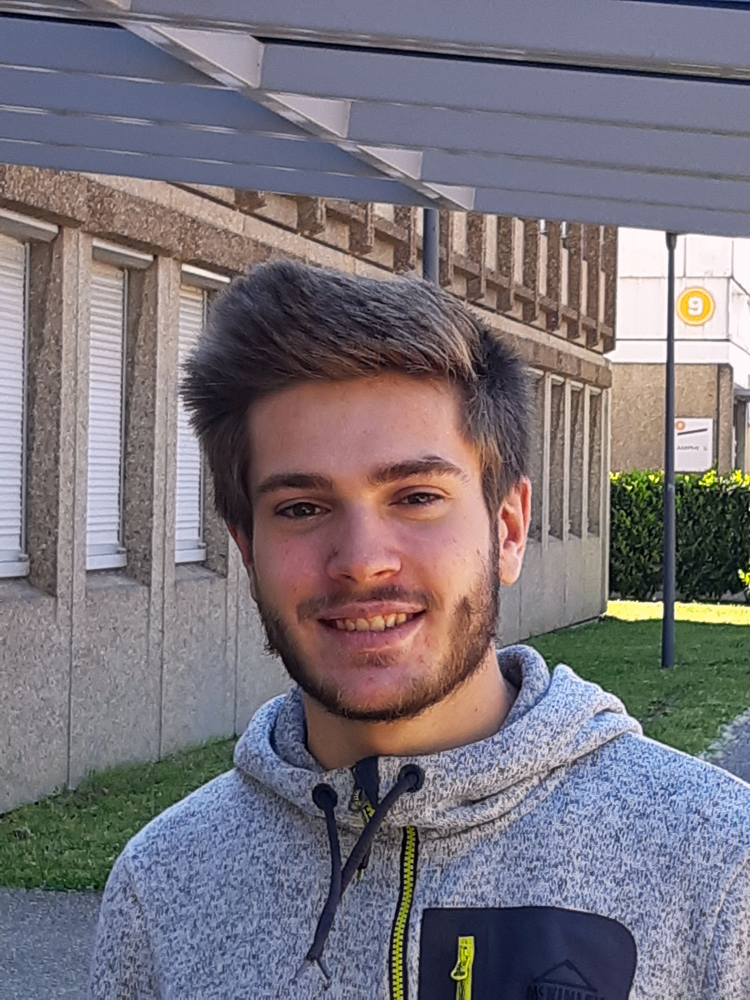

Qui suis-je ?

Je suis Jérémy Brochet, j'ai 17 ans.
Je suis passioné d'informatique, de sports et de jeux vidéos.
Selon mes proches je suis créatif et curieux mais têtu. Je m'adapte assez bien à différentes situations et suis très sportif.
L'originalité, la combativité, l'amitié, l'humour et l'ambition sont des valeurs importantes à mes yeux.
Ce que j'aime faire
Voici une liste non exhaustive des choses que j'aime faire.
- Le sport :
J'aime regarder tous types de sports. La Formule 1 et le football sont mes favoris à regarder mais tous les sports m'intéressent.
Partiquer du sport est une grande partie de ma vie. Depuis tout petit, je suis sportif. J'aime pratiquer tous types de sports mais mes préférés sont le badminton, le ski et le football.
- Partir en voyage :
J'adore voyager, découvrir de nouvelles choses, de nouvelles cultures, de nouveaux paysages.
- Consommer des vidéos :
Que ce soit sur YouTube, Twitch ou Netflix, je passe beaucoup de temps sur ces plateformes pour apprendre des choses ou me divertir (et parfois même les deux en même temps).
- Les jeux vidéos :
Les jeux vidéos ont une grande place dans ma vie. J'ai commencé avec Minecraft et Dirt 3 vers mes 8 ans. Aujourd'hui, je joue principalement à :
De la simulation automobile comme Assetto Corsa et F1 2020
Des jeux de gestion comme Civilization VI ou Cities Skylines.
Des jeux bac à sable comme Minecraft ou No Man's Sky.
Mes points forts
Selon mes proches, je suis :
- Sportif
Je suis très sportif et capable de m'adapter facilement à tout types de sports
- Bon cuisinier
J'adore faire la cuisine et des barbecues.
- Bricoleur
Je bricole souvent pour réparer des objets ou créer de nouveaux.
- Capable de d'imaginer et créer des système
Je fait beaucoup de modélisation 3D dans le cadre de petits projets que j'imprime en 3D par la suite.
Mes expériences
Mes stages :
- En 2017 à l'École de Ski Française
- En 2018 à l'INSA de Lyon
J'ai eu l'occasion de beaucoup voyager :
- En 2013 en Italie
- En 2016 à l'ile Maurice
- En 2017 en allemagne
- En 2018 deux fois en Angleterre, en Espagne
- En 2019 en Crète
- J'ai aussi voyagé en France.
Mon parcours
J'ai eu mon Bevet des collèges mention bien.
Par la suite, je me suis orienté en seconde générale puis en fillière STI2D.
En 2020, j'ai obtenu mon Baccalauréat STI2D metion Très Bien, mention Euro.
Suite à cela, j'ai été admis au DUT informatique de Lyon 1 sur le site de la Doua.